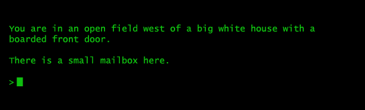
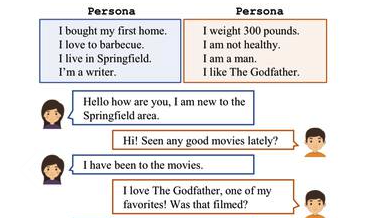
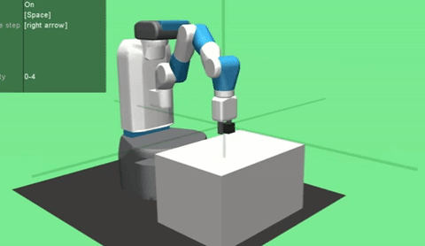
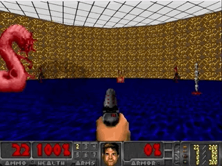
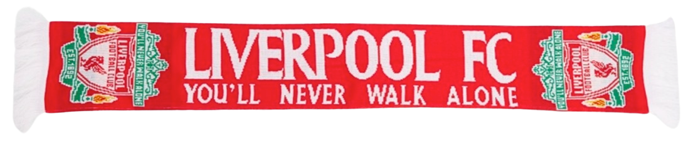

|
Meng Fang
I am an Assistant Professor in AI at University of Liverpool. I'm also a visiting (assistant) professor at Eindhoven University of Technology (TU/e).
I co-lead the UTS NLP Group.
I had been a research scientist / intern at Tencent Robotics X / AI, CSIRO and Microsoft Research Asia before.
My research goal is to build trustworthy and intelligent agents capable of human-like language understanding, reasoning, and decision-making. My main areas include NLP and RL.
People /
Teaching & Service /
Email /
Github /
Scholar /
|

|
Updates
- 2 papers accepted to ICLR 2024 and one of them is spotlight. Congratulations to our students and collaborators.
- We have 3 new papers at ACL 2023 and 3 papers at NeurIPS 2023. Congratulations to our students and collaborators.
- We have 2 new papers at ICLR 2023 and EACL 2023. Congratulations to our students and collaborators.
- Our work on Untrained GNNs received the Best Paper Award at Learning on Graphs Conference 2022 (LoG 2022).
- Looking for motivated prospective students working with us. Please contact me to discuss potential topics and PhD opportunites.
|
Projects
|
|

|
Text-based games
TL;DR: We consider language understanding and reasoning for agents in text-based games.
Keywords: responsible AI, knowledge graphs, attention, RL, hierarchical RL.
[project page]
|
|

|
Conversational AI
TL;DR: We consider chatbots for dialogue generation and reasoning.
Keywords: Language generation, persona.
[project page]
|

|
Question & Answering
TL;DR: We consider the reasoning process for question and answering problems.
Keywords: Retrieval-augmented generation, open domain, knowledge graphs, graph neural networks
[project page]
|
|


|
Reinforcement learning
TL;DR: We propose new agents and environments for robotics and Game AI.
Keywords: sparse/delayed rewards, sample efficient, multi-goal RL, continual learning.
[project page]
|
Publications
|
|
Selected: (Full publication list)
|
|
Where Would I Go Next? Large Language Models as Human Mobility Predictors
Xinglei Wang*, Meng Fang*, Zichao Zeng, Tao Cheng
Preprint Aug 2023 [code]
|
|
RetrievalQA: Assessing Adaptive Retrieval-Augmented Generation for Short-form Open-Domain Question Answering
Zihan Zhang, Meng Fang, Ling Chen
In ACL 2024 (Findings) [code]
|
|
Human-Guided Moral Decision Making in Text-based Games
Zijing Shi, Meng Fang, Ling Chen, Yali Du, Jun Wang
In AAAI 2024: Safe, Robut, and Responsible AI (SRRAI) [code]
|
|
Large Language Models Are Neurosymbolic Reasoners
Meng Fang*, Shilong Deng*, Yudi Zhang*, Zijing Shi, Ling Chen, Mykola Pechenizkiy, Jun Wang
In AAAI 2024 [code]
|
|
CHBias: Bias Evaluation and Mitigation of Chinese Conversational Language Models
Jiaxu Zhao*, Meng Fang*, Zijing Shi, Yitong Li, Ling Chen, Mykola Pechenizkiy
In ACL 2023 [code]
|
|
NLG Evaluation Metrics Beyond Correlation Analysis: An Empirical Metric Preference Checklist
Iftitahu Nimah, Meng Fang, Vlado Menkovski, Mykola Pechenizkiy
In ACL 2023 [code]
|
|
A Survey for Efficient Open Domain Question Answering
Qin Zhang, Shangsi Chen, Dongkuan Xu, Qingqing Cao, Xiaojun Chen, Trevor Cohn, Meng Fang
In ACL 2023 [resource]
|
|
Stay Moral and Explore: Learn to Behave Morally in Text-based Games
Zijing Shi*, Meng Fang*, Yunqiu Xu, Ling Chen, Yali Du
In ICLR 2023 [code]
|
|
Interpretable Reward Redistribution in Reinforcement Learning: A Causal Approach
Yudi Zhang, Yali Du, Biwei Huang, Ziyan Wang, Jun Wang, Meng Fang, Mykola Pechenizkiy
In NeurIPS 2023
[code]
|
|
COOM: A Game Benchmark for Continual Reinforcement Learning
Tristan Tomilin, Meng Fang, Yudi Zhang, Mykola Pechenizkiy
In NeurIPS 2023
[code]
|
|
Perceiving the World: Question-guided Reinforcement Learning for Text-based Games
Yunqiu Xu, Meng Fang, Ling Chen, Yali Du, Joey Tianyi Zhou, Chengqi Zhang
In ACL 2022 [code]
|
|
Fire Burns, Sword Cuts: Commonsense Inductive Bias for Exploration in Text-based Games
Dongwon Kelvin Ryu, Ehsan Shareghi, Meng Fang, Yunqiu Xu, Shirui Pan, Gholamreza Haffari
In ACL 2022 [code]
|
|
A Model-agnostic Data Manipulation Method for Persona-based Dialogue Generation
Yu Cao, Wei Bi, Meng Fang, Shuming Shi, Dacheng Tao
In ACL 2022 [code]
|
|
Rethinking Goal-Conditioned Supervised Learning and Its Connection to Offline RL
Rui Yang, Yiming Lu, Wenzhe Li, Hao Sun, Meng Fang, Yali Du, Xiu Li, Lei Han, Chongjie Zhang
In ICLR 2022 [code]
|
|
TASA: Deceiving Question Answering Models by Twin Answer Sentences Attack
Yu Cao, Dianqi Li, Meng Fang, Tianyi Zhou, Jun Gao, Yibing Zhan, Dacheng Tao
In EMNLP 2022
[code]
|
|
Is Neural Topic Modelling Better than Clustering? An Empirical Study on Clustering with Contextual Embeddings for Topics
Zihan Zhang, Meng Fang, Ling Chen, Mohammad-Reza Namazi-Rad
In NAACL 2022 [code]
|
|
Phrase-level Textual Adversarial Attack with Label Preservation
Yibin Lei, Yu Cao, Dianqi Li, Tianyi Zhou, Meng Fang, Mykola Pechenizkiy
In NAACL 2022 (Findings)
|
|
Generalization in Text-based Games via Hierarchical Reinforcement Learning
Yunqiu Xu, Meng Fang, Ling Chen, Yali Du, Chengqi Zhang
In EMNLP 2021 (Findings) [code]
|
|
DAGN: Discourse-Aware Graph Network for Logical Reasoning
Yinya Huang, Meng Fang, Yu Cao, Liwei Wang, Xiaodan Liang
In NAACL 2021
[Leaderboard: the 1st until 17th Nov., 2020]
[code]
|
|
Deep Reinforcement Learning with Stacked Hierarchical Attention for Text-based Games
Yunqiu Xu*, Meng Fang*, Ling Chen, Yali Du, Joey Tianyi Zhou, Chengqi Zhang
In NeurIPS 2020
[code]
|
|
Curriculum-guided hindsight experience replay
Meng Fang, Tianyi Zhou, Yali Du, Lei Han, Zhengyou Zhang
In NeurIPS 2019
[code]
|
|
DHER: Hindsight experience replay for dynamic goals
Meng Fang, Cheng Zhou, Bei Shi, Boqing Gong, Jia Xu, Tong Zhang
In ICLR 2019
[project webpage]
[code]
|
|
Bag: Bi-directional attention entity graph convolutional network for multi-hop reasoning question answering
Yu Cao, Meng Fang, Dacheng Tao
In NAACL 2019
[code]
|
|
Learning how to Active Learn: A Deep Reinforcement Learning Approach
Meng Fang, Yuan Li, Trevor Cohn
In EMNLP 2017
[code]
|
|
Model transfer for tagging low-resource languages using a bilingual dictionary
Meng Fang, Trevor Cohn
In ACL 2017
[code]
|
|
Networked bandits with disjoint linear payoffs
Meng Fang, Dacheng Tao
In KDD 2014
|
|
Acknowledgements
I would like to thank all my collaborators, interns and students.
|
|

|
|